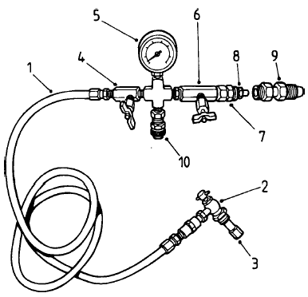

-240制动储能器 · BRAKE SYSTEM ACCUMULATOR
Спецификация1защитник воздушного клапана4пружинная шайба7концевая крышка для газа10поршень2клапан для накачивания5упорное кольцо8уплотнительное кольцо11цилиндр3болт6O-кольцо9уплотнительное кольцоРис. 1. Схема структуры тормозного аккумулятора
Спецификация
1
защитник воздушного клапана
4
пружинная шайба
7
концевая крышка для газа
10
поршень
2
клапан для накачивания
5
упорное кольцо
8
уплотнительное кольцо
11
цилиндр
3
болт
6
O-кольцо
9
уплотнительное кольцо
Рис. 1. Схема структуры тормозного аккумулятора
储能器
Обзор
Аккумулятор представляет собой цилиндрическое устройство с поршнем, один конец которого оснащен съемной крышкой, а другой - фиксированной или сварной крышкой. Отличие между двумя крышками заключается в том, что на стороне крышки для газа имеется большой воздушный клапан и защитник.
Аккумулятор устанавливается рядом с коробкой гидравлических элементов на платформе.
Операция
Аккумуляторы хранят энергию, увеличивая давление масла. В процессе эксплуатации они могут выполнять следующие функции:
1. В системе они служат запасным источником подачи давления масла, включая гидравлический бак для регулирования и дополнения потока от насоса.
2. Они также поглощают избыточные или недостаточные колебания давления, поддерживая систему при постоянном давлении.
Аккумулятор работает по принципу плавающего поршня. Одна сторона предварительно заполняется сухим азотом (под давлением), а другая напрямую соединена с подающим трубопроводом системы. Скользящий поршень с несколькими кольцами разделяет масло и газ.
Когда в жидкостной части нет гидравлического масла, под давлением газа поршень перемещается к жидкостной части. Когда под давлением жидкость поступает в жидкостную часть, она толкает поршень, сжимая газ. Когда масло перемещается в соответствии с потребностями системы, сжатый газ толкает поршень обратно к нижней части цилиндра. В этом аккумуляторе давление в жидкостной и газовой частях всегда одинаково.
Ремонт и обслуживание
ПредупреждениеТак как аккумулятор заполнен сжатым азотом, не пытайтесь разбирать какие-либо трубы или соединения до того, как всё давление азота будет полностью сброшено. Внезапное сброс давления может привести к травмам персонала и повреждению оборудования.Для предотвращения травм и ущерба имуществу убедитесь, что материалы для покрытия машины и подъемное оборудование имеют достаточную прочность. Правильно закрепите их для обеспечения безопасности при работе.
Предупреждение
Так как аккумулятор заполнен сжатым азотом, не пытайтесь разбирать какие-либо трубы или соединения до того, как всё давление азота будет полностью сброшено. Внезапное сброс давления может привести к травмам персонала и повреждению оборудования.
Для предотвращения травм и ущерба имуществу убедитесь, что материалы для покрытия машины и подъемное оборудование имеют достаточную прочность. Правильно закрепите их для обеспечения безопасности при работе.
Регулярное техническое обслуживание включает следующие шаги:
1. Проверьте гидроаккумулятор, цилиндр и соединительные детали на наличие утечек, повреждений или износа. При необходимости отремонтируйте или замените согласно требованиям.
2. Следуя инструкциям в этом руководстве в разделе 050-Гидравлическая система, о том, как накачивать гидроаккумулятор, проверьте давление газа в газовой камере аккумулятора.
Перекачайте газ согласно указаниям. Если часто требуется подкачка, это может указывать на необходимость замены уплотнительных кольцевых элементов.
Примечание: Использование изношенного поршневого уплотнительного кольца может привести к попаданию газа в гидравлическое масло системы. Смесь газа и масла может негативно сказаться на работе системы (может вызвать отсутствие стабильности или равномерности в работе системы, слабую или нестабильную работу), как если бы система работала на воздухе или другом газе. Если газ попал в рабочую жидкость, важно убедиться в том, чтобы все примеси были полностью удалены из гидравлического масла перед началом работы горного самосвала.
Заполнение аккумулятора
Номера в скобках см. на рис. 2
Заполните аккумулятор согласно следующим инструкциям:
ПредупреждениеЗаполняйте аккумулятор газообразным азотом, не используйте жидкий азот или другие газы.
Предупреждение
Заполняйте аккумулятор газообразным азотом, не используйте жидкий азот или другие газы.
1. Поставьте горную машину на безопасное место. Для надежной остановки машины следует использовать что-либо кроме трения или стояночной тормозной системы.
Спецификация1трубопровод6Клапан газовогобаллона2гнездо для накачки7герметиченоесоединение3удлинитель длянакачки8герметичнаягайка4вентиль для накачки подвесного цилиндра9соединение длябаллона с азотом5манометр10вентиль для сброса давлениярис. 2 инструменты для заполнения2. Откройте все клапаны, чтобы выпустить все гидравлическое давление из каждого аккумулятора до тех пор, пока все давление в аккумуляторе не будет полностью сброшено (обычно звук прекращается при завершении сброса). Затем закройте клапаны.
Спецификация
1
трубопровод
6
Клапан газового
баллона
2
гнездо для накачки
7
герметиченое
соединение
3
удлинитель для
накачки
8
герметичная
гайка
4
вентиль для накачки
подвесного цилиндра
9
соединение для
баллона с азотом
5
манометр
10
вентиль для
сброса давления
рис. 2 инструменты для заполнения
2
2
3. Убедитесь, что крышка аккумулятора установлена вровень с цилиндром и что воздушный клапан закручен.
4. Закрутите герметичную гайку (8) и соедините инструмент для накачки с баллоном с азотом.
5. Снимите защитный кожух воздушного клапана (1, рис.1) и колпачок накачивающего клапана (2, рис.1).
Установите гнездо для накачки (2) на клапан для накачки азотом (2, рис.1) следующим образом:
а. Поверните "Т"-образную рукоятку гнезда для накачки (2) против часовой стрелки, пока она не остановится.
б. Затяните вращающуюся гайку на клапане для накачки азотом (2, рис.1) до полной закрутки.
в. Поверните маленькую шестигранную гайку на клапане для накачки азотом (2, рис.1) против часовой стрелки на два или три оборота, чтобы внутренний клапан отошел от сиденья клапана.
г. Поверните "Т"-образную рукоятку гнезда для накачки (2) по часовой стрелке до упора, чтобы открыть обратный клапан на клапане для накачки азотом (2, рис.1).
ПредупреждениеПри заполнении высоким давлением азота на инструменте для накачки обязательно должен быть установлен ограничитель давления. Использование инструмента без ограничителя давления может привести к травмам персонала и повреждению оборудования.
Предупреждение
При заполнении высоким давлением азота на инструменте для накачки обязательно должен быть установлен ограничитель давления. Использование инструмента без ограничителя давления может привести к травмам персонала и повреждению оборудования.
Примечание: не следует сворачивать шланг в кольцо или изгибать его, так как под давлением азота, высвобождаемого из баллона, шланг становится очень жестким.
7. Закройте вентиль для сброса давления (10) на устройстве для накачки.
8. При проверке давления в баллоне с азотом закройте клапан для накачки аккумулятора (2, рис.1), откройте воздушный клапан (6), медленно откройте клапан на баллоне и следите за показаниями манометра (5).
9. Закройте клапан газового баллона (6), откройте клапан для накачки аккумулятора (2, рис.1) и постепенно открывайте, и временно закрывайте клапан газового баллона (6) в процессе накачки. При проверке внутреннего давления аккумулятора закройте клапан газового баллона (6) и следите за показаниями манометра (5).
а. Если давление ниже указанного в правильной процедуре тестирования значения 950–1050 psi (6555-7245 kPa), слегка откройте клапан газового баллона (6) для медленной накачки аккумулятора. Когда показания манометра достигнут желаемого давления, закройте клапан газового баллона (6).
б. Если давление превышает указанный в правильной процедуре тестирования диапазон, слегка откройте вентиль для сброса давления (10) на устройстве для накачки, чтобы выпустить избыточное давление, а затем закройте его.
ПредупреждениеОбязательно избегайте прямого контакта азота с кожей человека.Если происходит утечка и азот попадает на человека, его кожа может получить обморожение. Не пытайтесь уменьшать предварительное давление в аккумуляторе, непосредственно нажимая на клапанный стержень, так как высокое давление может проколоть резиновое седло клапана. Вместо этого следует использовать устройство для накачки и применять вентиль для сброса давления.
Предупреждение
Обязательно избегайте прямого контакта азота с кожей человека.
Если происходит утечка и азот попадает на человека, его кожа может получить обморожение.
Не пытайтесь уменьшать предварительное давление в аккумуляторе, непосредственно нажимая на клапанный стержень, так как высокое давление может проколоть резиновое седло клапана. Вместо этого следует использовать устройство для накачки и применять вентиль для сброса давления.
Примечание: если в этом процессе большое количество азота было введено в аккумулятор или выпущено из него, рекомендуется убедиться, что температура аккумулятора стабилизировалась на том уровне, на котором последний раз производилось измерение давления. Это можно достичь, оставив систему в покое на 10–15 минут после добавления или выпуска газа.
10. Когда накачка завершена и давление в аккумуляторе достигло предустановленного значения 950–1050 psi (6555-7245 kPa), закройте клапан на баллоне с азотом и воздушный клапан (6), а затем поверните "Т"-образную рукоятку гнезда для накачки (2) против часовой стрелки до упора.
11. Откройте клапан для накачки аккумулятора (4) и вентиль для сброса давления (10) для сброса давления в манометре (5) и в трубопроводе (1). Ослабьте вращающуюся гайку на гнезде для накачки (2). Снимите гнездо для накачки (2) и трубопровод (1) с клапана для накачки (2, рис.1). Поверните шестигранный гай на клапане для накачки (2, рис.1) по часовой стрелке, чтобы закрыть клапан.
ПредупреждениеНикогда не ослабляйте вращающуюся гайку, пока не откроете "Т"-образную рукоятку и вентиль для сброса полностью.
Предупреждение
Никогда не ослабляйте вращающуюся гайку, пока не откроете "Т"-образную рукоятку и вентиль для сброса полностью.
12. Установите крышку клапана для накачки (2, рис.1) и защитный кожух воздушного клапана (1, рис.1).
Примечание: Процедуры проверки и сброса предварительного давления очень похожи.
13. Запустите двигатель горной машины, чтобы аккумулятор заполнился гидравлическим маслом, и проверьте работу системы.
Демонтаж
Номера в скобках см. на рис. 1.
ПредупреждениеДля предотвращения травм и ущерба имуществу убедитесь, что материалы для покрытия машины и подъемное оборудование имеют достаточную грузоподъемность. Правильно закрепите их для обеспечения безопасности работы.
Предупреждение
Для предотвращения травм и ущерба имуществу убедитесь, что материалы для покрытия машины и подъемное оборудование имеют достаточную грузоподъемность. Правильно закрепите их для обеспечения безопасности работы.
ПредупреждениеПоскольку аккумулятор заполняется под давлением азотом, не пытайтесь снимать его с горной машины до полного сброса давления азота. Внезапное освобождение давления может привести к травмам персонала и повреждению оборудования.
Предупреждение
Поскольку аккумулятор заполняется под давлением азотом, не пытайтесь снимать его с горной машины до полного сброса давления азота. Внезапное освобождение давления может привести к травмам персонала и повреждению оборудования.
При демонтаже аккумулятора следуйте следующим шагам:
1. Следуйте инструкциям в разделе 050-Гидравлическая система для сброса всего гидравлического давления аккумулятора и всех систем.
2. Следуйте инструкциям в разделе "Техническое обслуживание и ремонт" для полного сброса азота в аккумуляторе.
3. Снимите защитный кожух воздушного клапана (1) и открутите клапан для накачки (2) до тех пор, пока избыточный газ начинает выходить. Дождитесь полного выхода газа, прежде чем приступить к другим операциям.
4. После полного сброса давления в аккумуляторе, снимите клапан для накачки (2).
ПредупреждениеТак как достаточно охлажденный азот может причинить вред человеку, весь процесс работы должен проходить с особой осторожностью. Избегайте контакта с кожей, одеждой или другими частями тела, чтобы предотвратить травмы.
Предупреждение
Так как достаточно охлажденный азот может причинить вред человеку, весь процесс работы должен проходить с особой осторожностью. Избегайте контакта с кожей, одеждой или другими частями тела, чтобы предотвратить травмы.
5. Отключите гидравлический трубопровод от нижней части аккумулятора, слейте оставшуюся жидкость в подготовленный контейнер, заблокируйте трубопровод и отверстие аккумулятора, пометьте их для дальнейшей установки.
6. Используйте подъемное оборудование с достаточной грузоподъемностью для поддержки аккумулятора, снимите крепежные болты аккумулятора и установочные скобы, отделите аккумулятор от установочных скоб.
Примечание: Резьбовые отверстия на верхней части газовой крышки аккумулятора можно использовать как точки для подвешивания или для подвешивания с помощью подходящего подъемного оборудования.
Разборка
Номера в скобках см. на рис. 1.
При разборке аккумулятора следуйте следующим шагам:
1. Проверьте, снят ли клапан для накачки (2). Если он не снят, убедитесь, что все жидкости и газы в аккумуляторе полностью выпущены в соответствии с инструкциями по техническому обслуживанию и ремонту.
ПредупреждениеГлубокие следы от плоскогубцев, царапины или искривления на внешней части цилиндра могут вызвать концентрацию напряжений при высоком давлении. Это в конечном итоге может привести к утечке из детали или ее отказу.
Предупреждение
Глубокие следы от плоскогубцев, царапины или искривления на внешней части цилиндра могут вызвать концентрацию напряжений при высоком давлении. Это в конечном итоге может привести к утечке из детали или ее отказу.
2. Разместите аккумулятор горизонтально и закрепите его.
3. Установите болты, используемые для демонтажа, на газовой крышке (7).
ПредупреждениеНеобходимо сначала снять газовую крышку, так как она соединена с клапаном для накачки.
Предупреждение
Необходимо сначала снять газовую крышку, так как она соединена с клапаном для накачки.
4. Используйте подходящую стальную прут для демонтажа газовой крышки (7), будьте осторожны, чтобы не повредить резьбу газовой крышки при установке.
5. Снимите и утилизируйте "О"-образное кольцо (6) и стопорное кольцо (5) с газовой крышки (7).
ПредупреждениеПри демонтаже поршня не следует использовать сжатый воздух для его выталкивания.
Предупреждение
При демонтаже поршня не следует использовать сжатый воздух для его выталкивания.
6. Вставьте подходящую деревянную палку в масляное отверстие с жидкостной стороны в нижней части цилиндра (11) и вытолкните поршень (10) из цилиндра. Особое внимание уделите тому, чтобы не повредить резьбу цилиндра или уплотнения поршня.
Снимите и утилизируйте уплотнительные кольца (8,9) с поршня (10).
Примечание: при снятии уплотнительных колец (8,9) с поршня (10), используйте маленькую, гладкую отвертку или аналогичный инструмент, чтобы поддержать уплотнительное кольцо. Продолжая поддерживать кольцо инструментом, оберните его вокруг поршня несколько раз, одновременно снимая каждое уплотнительное кольцо другой рукой.
Проверка и ремонт
В скобках номера смотрите на рис. 1.
Компенсатор можно отремонтировать следующим образом:
1. Тщательно очистите все металлические детали растворителем и высушите сжатым воздухом.
2. Очистите внутренние отверстия цилиндра (11) и поршня (10) с помощью чистой тряпки, пропитанной растворителем.
Примечание: необходимо устранить любые видимые или ощутимые мелкие частицы на внутреннем отверстии и поршне.
3. Проверьте поршень на наличие трещин, заусенцев (особенно вокруг канавки для уплотнения поршня) или признаков повреждения. Также проверьте повреждения, вызванные контактом с нижней частью крышки. При необходимости отремонтируйте или замените.
4. Проверьте резьбу и канавку под "O"-образное уплотнение на крышке (7, 12) на предмет повреждений. При необходимости отремонтируйте или замените.
5. Используя инспекционный фонарик, проверьте внутреннее отверстие компенсаторного цилиндра (11) на наличие царапин или сколов. Мелкие царапины или поверхностные дефекты на внутреннем отверстии цилиндра (11) можно устранить с помощью тонкой шлифовальной бумаги до полного удаления дефекта. Если степень износа или повреждения превышает допустимые пределы для ремонта, компенсаторную сборку следует заменить.
6. Проверьте уплотнительное кольцо. Если есть повреждения, определите причину их возникновения до замены. При каждом разборе рекомендуется менять на новое.
Примечание: установите уплотнительное кольцо на поршень так, чтобы оно не соприкасалось с внутренним отверстием компенсатора.
Сборка:
В скобках номера смотрите на рис. 1
Процесс сборки компенсатора следует выполнять следующим образом:
Спецификация8уплотнительное кольцо9уплотнительное кольцоРис. 3 Сечение поршня
Спецификация
8
уплотнительное кольцо
9
уплотнительное кольцо
Рис. 3 Сечение поршня
1. Покрыть все уплотнительные элементы специализированным смазочным веществом, внутреннюю поверхность цилиндра (11) покрыть слоем чистого гидравлического масла, совместимого с гидросистемой горного самосвала.
2. Установите новые уплотнительные кольца (8, 9, рис. 3) на внешний желоб поршня, см. рис. 3.
Примечание: при установке уплотнительных колец их необходимо слегка растянуть. После установки они должны вернуться к своему исходному размеру в течение нескольких минут. Охлаждение может ускорить этот процесс. Тем не менее, перед продолжением установки убедитесь, что все влажные остатки удалены, и особенно убедитесь, что уплотнительные кольца не искривлены или деформированы.
3. Установите поршень (10) в внутренний отверстие цилиндра (11). Большая внутренняя сторона поршня должна быть направлена к стороне газового отсека
Примечание: 1. Поршень должен быть вставлен полностью прямо и медленно в отверстие, так как быстрое введение может повредить его. Поршень должен плотно прилегать. Убедитесь, что уплотнительное кольцо не царапает резьбу. 2. Используйте молоток и деревянную пробку или блок для легкого удара по поршню, чтобы полностью вставить его в отверстие, на расстоянии не менее 2 дюймов (50 мм) от края отверстия. Если поршень будет продолжать движение после того, как уплотнительное кольцо прошло через закругление отверстия, поршень может отскочить обратно и повредить уплотнительное кольцо. Закройте отверстие, чтобы предотвратить попадание пыли.
4. Установите новые уплотнительное кольцо (5) и "O"-образное уплотнение (6) на газовой крышке (7) и покрыть специальным смазочным веществом. Установите газовую крышку на цилиндр и затяните до момента образования уплотнения "O"-образным кольцом. Крутящий момент составляет 425 фут-фунтов. Не затягивайте слишком сильно, чтобы не повредить уплотнение.
Примечание: 1. При установке убедитесь, что уплотнительное кольцо не тянется по резьбе. 2. Крышка должна быть затянута, но не слишком сильно.
5. Установите запорный клапан (2).
7. Установите защитник воздушного клапана (1) и затяните.
Установка
Для установки компенсатора на горный самосвал следуйте следующим шагам:
ПредупреждениеДля предотвращения травм и ущерба имуществу убедитесь, что материалы и оборудование для подъема имеют достаточную грузоподъемность и надежно закреплены для безопасной работы.
Предупреждение
Для предотвращения травм и ущерба имуществу убедитесь, что материалы и оборудование для подъема имеют достаточную грузоподъемность и надежно закреплены для безопасной работы.
1. Разместите аккумулятор на соответствующем месте на опорной раме так, чтобы его масляное отверстие было направлено вниз.
2. Установите детали для фиксации.
3. Закрепите крепежные детали с помощью болтов и шайб.
4. Снимите заглушки, установленные во время демонтажа для предотвращения попадания мусора в гидравлическую трубопроводную систему и масляное отверстие аккумулятора. Установите гидравлическую линию на входное отверстие аккумулятора.
5. Предварительно наполните аккумулятор газом согласно инструкциям по обслуживанию и ремонту.
6.Запустить двигатель карьерного самосвала, осуществлять повышение давления или наполнение системы надлежащим образом. Проверить наличие/отсутствие утечек или повреждений.
7.Удалить воздух и другие примеси из каждой системы в соответствии с порядком, указанным в части 050 - «Гидравлическая система».
8.Проводить функциональные испытания системы в соответствии с порядком, указанным в части 050 - «Гидравлическая система».
Иллюстрации


